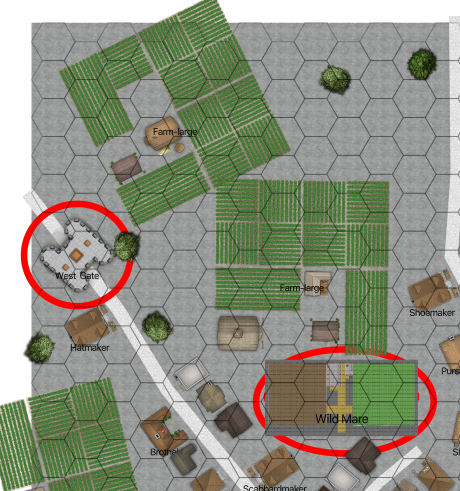

The West Gate of City of White Water¶
The guards will stare at you as the sun rises behind the gate tower.
You’ll be met by the Guide, leading two sorry-looking bandits, one of whom is wincing from what might be a broken rib, and a night sleeping on the floor.

West Gate of the City of White Water¶
Scale: 1 hex = 2m
You’ll be walking to Hillshire from here. Ideally, you have enough food for a three-day march.
Wild Mare Bartender: Agility 2D, fighting +1, Coordination 3D+2, Physique 3D+2, Intellect 3D, Acumen 3D+2, investigation +1, streetwise +2, Charisma 3D+2, intimidation 3D+1. Disadvantages: Quirk (R2), Greedy; Quirk (R2), Terrified of Candler; Hindrance (R2), Only one eye, Move: 10, Strength Damage: 2D, Fate Points: 1, Character Points: 5, Body Points: 20, Equipment: Kitchen knife 1D; Club 1D+1.
Bandit Group Guide: Agility 3D, fighting 1D, melee combat +2, Coordination 3D, Physique 3D, stamina 1D, Intellect 3D, healing +2, Acumen 3D, hide 1D, streetwise +2, tracking 1D, Charisma 3D, intimidation 2D+2. Disadvantages: Devotion (R2), Cult of the Jackal; Employed (R2), Cult of the Jackal; Quirk (R2), Drunk, Move: 10, Strength Damage: 2D, Fate Points: 0, Character Points: 5, Body Points: 20, Equipment: Padded leather armor 1D; Dagger 1D; Spiked Club 1D+1.
Bandit Army – Guard, Thug, etc.: Agility 3D, fighting 1D, melee combat +2, Coordination 3D, Physique 3D, Intellect 3D, Acumen 3D, Charisma 2D. Disadvantages: Devotion (R3), Cult of Jackal; Employed (R3), Jackal Temple; Quirk (R2), Hopes to becomes an agent, Special Abilities: Natural Hand-to-Hand Weapon (R3), Brutal punch, Move: 10, Strength Damage: 2D, Fate Points: 0, Character Points: 5, Body Points: 24, Equipment: Spiked Club 1D+1.
GM Note
Ignore the bartender from The Wild Mare. They’re not going on this trip.